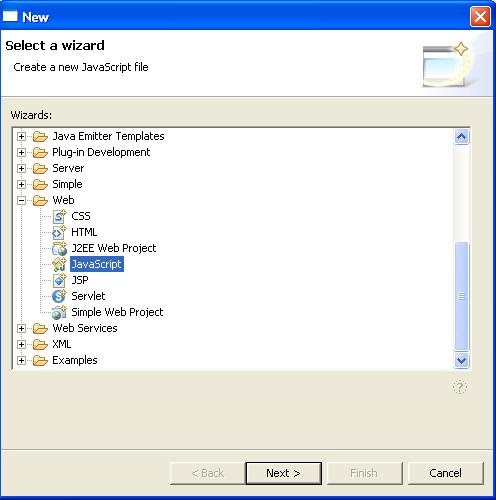
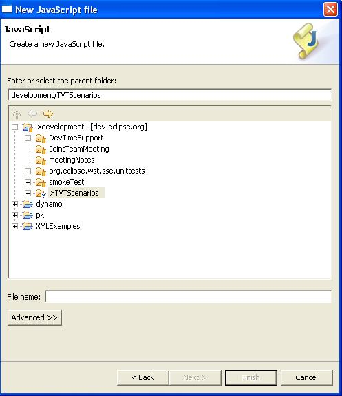
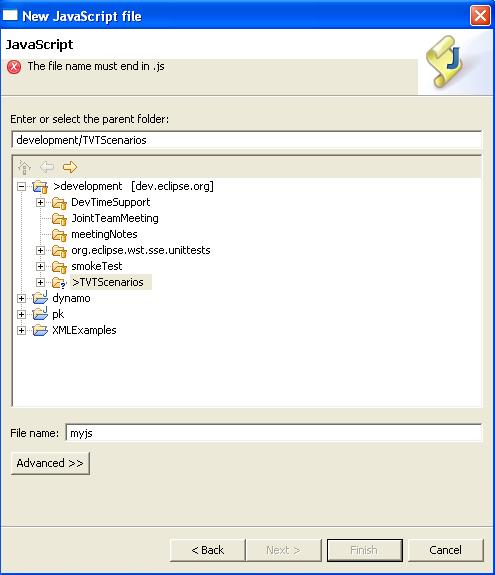
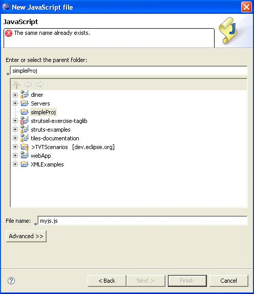

New Javascript File Wizard
Steps:
- Go to File ->New ->Other ->Web and select
JavaScript
- Verify description of JavaScript wizard, Create a new
JavaScript file.

- Click the Next button
- Verify the following in the New JavaScript File dialog:
- New JavaScript Page
- JavaScript
- Create a new JavaScript file
Note: Other translations are covered by IES.

- Type "myjs.j"
- Verify the error message that appears.

- Add the last 's' for "myjs.js"
- Press Finish to create the file and leave the wizard.
- Try to create the same exact js file again, "myjs.js" in
the same location.
- Verify the error message that appears.
